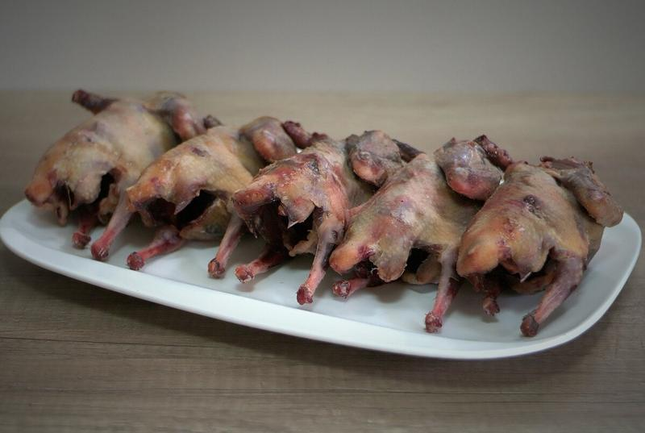
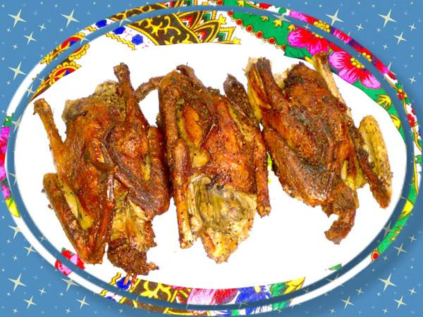
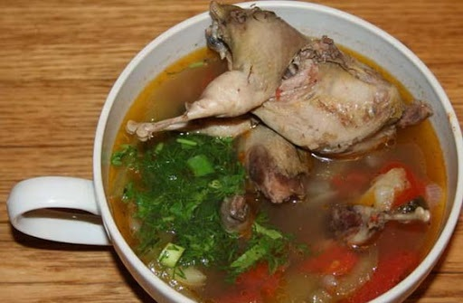
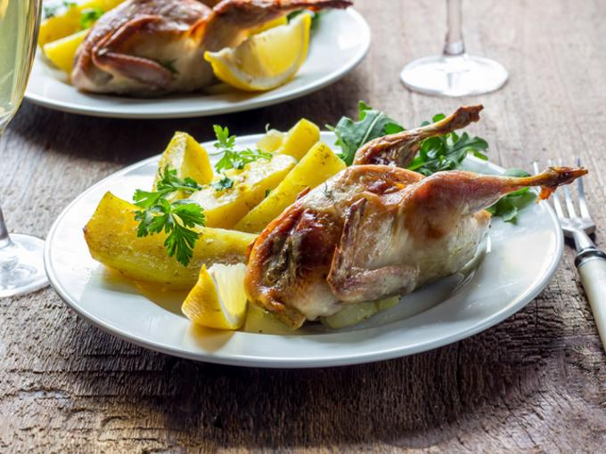

Главная вишенка этого проекта
Это вкуснейшая еда из голубей!
Немногие знают, что голубиное мясо является ценным диетическим белковым продуктом. Его невозможно встретить на прилавках магазинов, но по вкусовым качествам оно не уступает другим представителям птичьего царства. Добыть голубиное мясо можно только на охоте и на специальной ферме по разведению, а использовать для приготовления десятка разнообразных блюд.

Чем полезно голубиное мясо?
Мясо домашнего, специально выведенного голубя является продуктом, полезным для здоровья. Оно оказывает следующее благоприятное воздействие:
- улучшает иммунитет
- способствует нормализации пищеварения
- помогает поддерживать нормальный вес
- оказывает благотворное влияние на сердечно-сосудистую деятельность
Некоторые блюда из голубя, но они очень вкусные:
1.Голуби, жареные с трюфелями
Ароматное блюдо, которое подойдет не только к повседневному, но и к праздничному столу.
- Промытые и подсушенные голубиные тушки, в количестве 5-6 штук, необходимо подрумянить на раскаленной сковороде с кусочками свиного шпика.
- В это время в отдельной емкости смешать 3 чашки куриного бульона, 2 измельченных трюфеля, 1 ст.л. муки, ½ рюмки мадеры и несколько столовых ложек растопленного сливочного масла.
- Разрезать тушки птиц пополам, сложить в глубокий сотейник и залить подготовленным соусом.
- Тушить под закрытой крышкой в течение 5-10 минут.

2.Суп из дикого голубя
Мясо дикой птицы обладает особым вкусом и из него получается питательной и наваристый бульон для супа
- Выпотрошенную тушку поместить в 2 л холодной воды, добавить коренья и репчатый лук, отварить на небольшом огне в течение одного часа.
- По окончанию варки, вынуть птицу из бульона и отделить мясо от костей.
- Вернуть его обратно в суп и добавить затирку (2 ст.л.), состоящую из пшеничной муки, обжаренной на сливочном масле.
- Проварить 10 минут, посолить по вкусу, добавить 2 ст. л. мелкой вермишели и через одну минуту выключить нагрев под кастрюлей.
- Посыпать суп свежей зеленью, заправить сметаной.

3.Голубиное мясо с гарниром из картофеля
Это сытное и сочное блюдо, с приготовлением которого справится любой кулинар.
- Дно неглубокой формы необходимо смазать растительным маслом и выложить на нее 300 г сырых шампиньонов, разрезанных пополам.
- Несколько голубиных тушек обмазать солью и специями по вкусу, выложить сверху на грибы.
- Посыпать блюдо двумя мелко нарезанными сырыми луковицами и разложить вокруг несколько крупных картофелин, нарезанных кружочками.
- Закрыть форму фольгой и поставить её в духовку, разогретую до температуры 180 градусов, на полтора часа.
- По истечению этого времени удалить фольгу и поставить блюдо в духовку для подрумянивания еще на 10 минут.
